Алматы Экология
АқпаратАлматы
Жасыл аймақтары
Алматы – Қазақстанның ең үлкен қаласы және бүкіл Азиядағы ең әдемі қалалардың бірі. Әрине, Қазақстанның оңтүстік астанасының басты сұлулығы оның шекарасынан сәл ғана тысқары жерде жатыр.
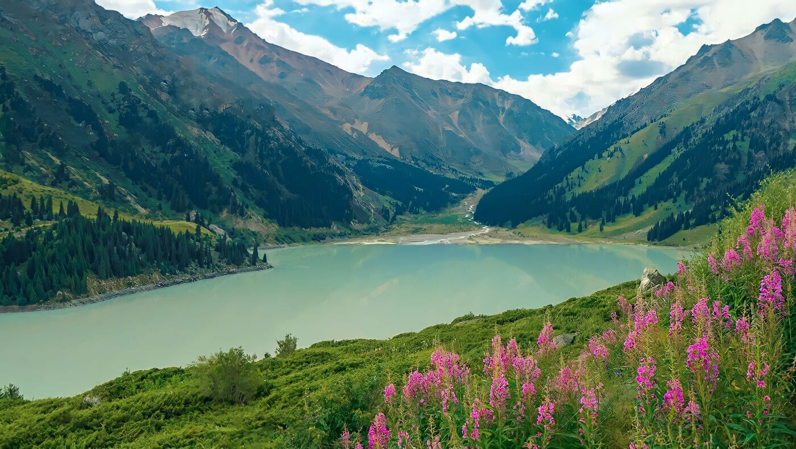
Балқаш
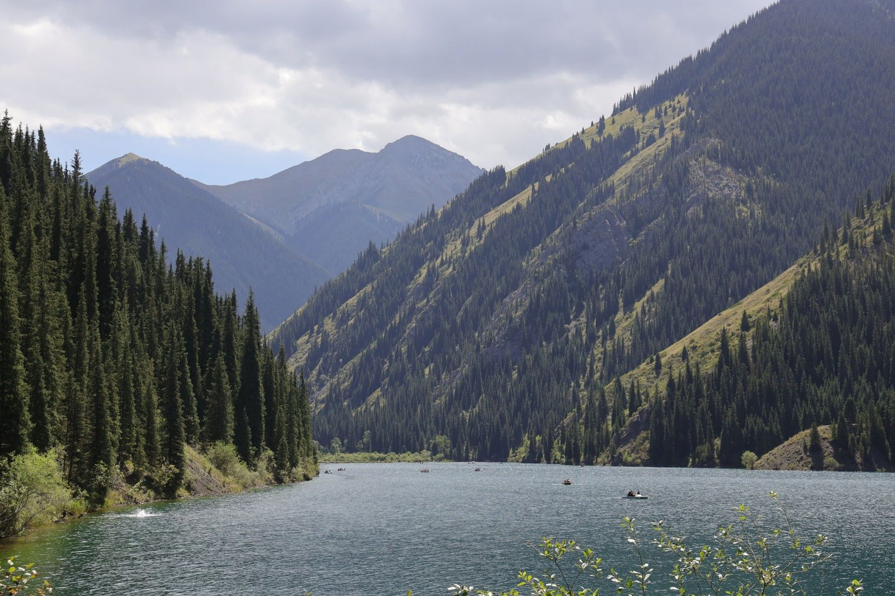
Таудар
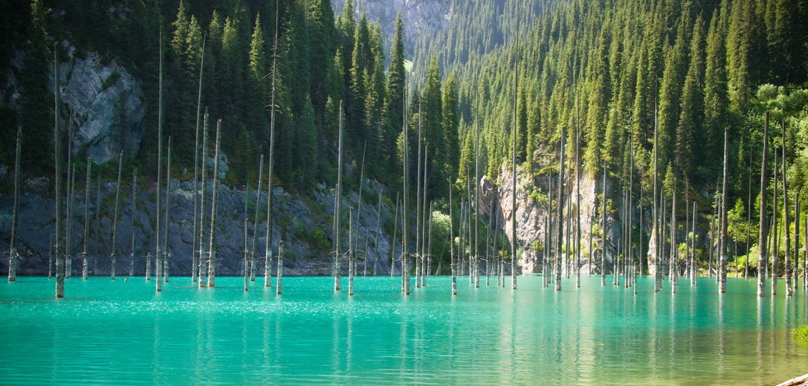
Қайынды
Экология
Ерешеліктері
Жануарлар
Алматы қаласы мен Алматы облысының фаунасы өзі ерекше. Бірақ таулы және далалық аймақтар сирек кездесетін және таңғажайып жануарлардың санына толы.
Табиғат
Алматының ең әдемі көлдері бар немесе оларды көк көлдер деп атайды. Бұл мөлдір су қоймалары, олардағы су мөлдір және жыл мезгіліне байланысты түсі өзгереді.
Таулар
Таулар әрқашан бәрі сәл өзгеше болатын ерекше әлем. Таудың серпентиніне көтеріле отырып, сіз өзіңізді шынайы емес нәрсеге тап боласыз: оң және сол жағында қарлы беткейлері мен көк Тянь-Шань шыршалары бар асқақ шыңдар.
Климаты
Тянь-Шань тау бөктерінде орналасуы температураның күрт ауытқуын тудырады, әсіресе маусымаралық кезеңде.
Қысы суық, орташа температурасы -5°C -7°C, бірақ -30°C дейін аяз болуы мүмкін.
Жазы ыстық, температурасы +20°C +25°C, кейде +35°C-қа жетеді.
Экология
Мәселелері
Айналасы таумен көмкерілген, жасыл желекке бөленген, таза ауа бесігіне айналған Алматыны көзге көрінбейтін проблемалар пердесі басып тұр. Машиналардың гуілдері, өнеркәсіптік күрсінулер мен лаулаған полигондар бір кездегі таза ауаны улайды. Бір кездері сылдырлаған өзендер ағынды суларға тұншығып қалады. Ағаштар, ыстықтан қорғаушылар, ойланбастан кесу қысымына түседі.
Мәселелердің
Шығу жолы
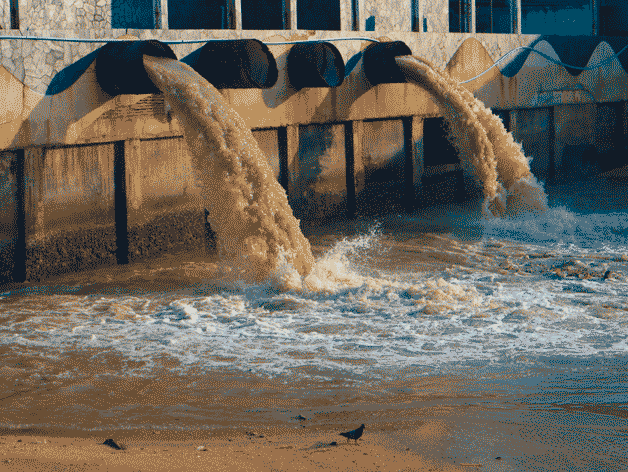
Қалдықтар
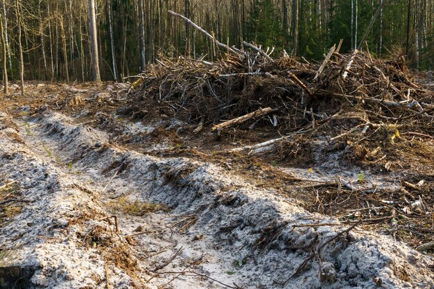
Ормандарды кесу
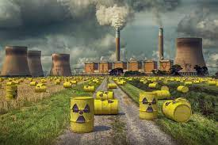
Радиациялық қоқыс
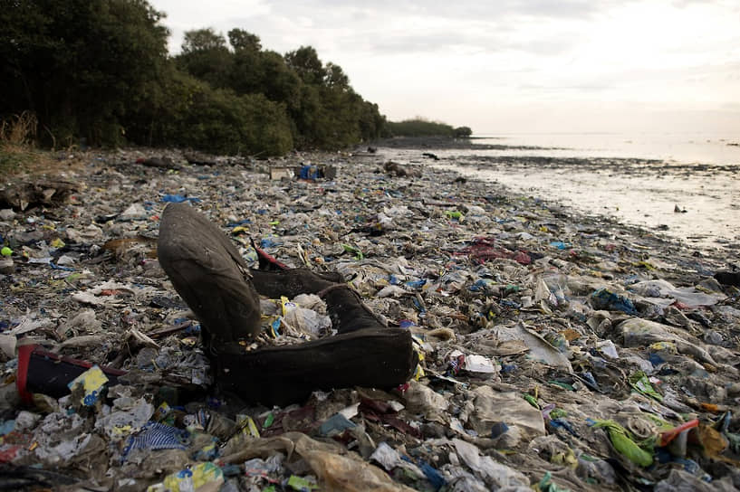
Қоқыс
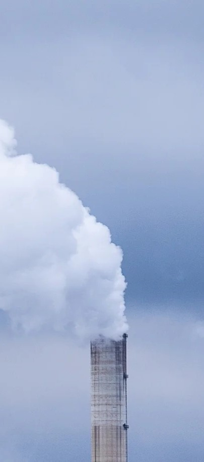
Ауа Ластануы
Экология нашарланудың
Нәтижесі
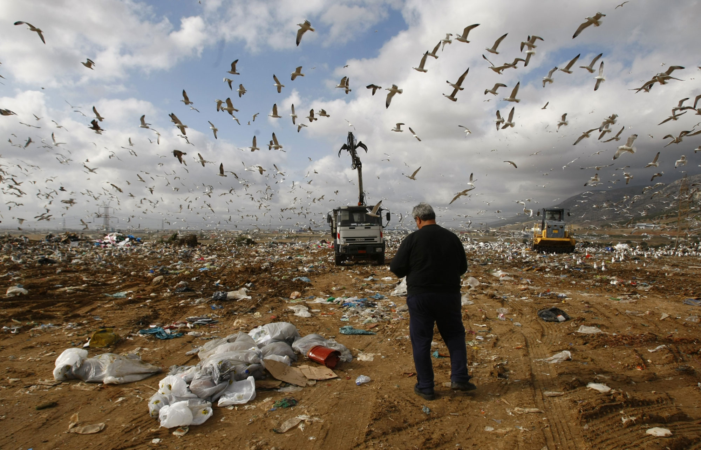
Жер ластанудан, өсімдіктер түрлері қырылып жатыр, токсин заттардың үлкен шамада жиналуына әкеледі.
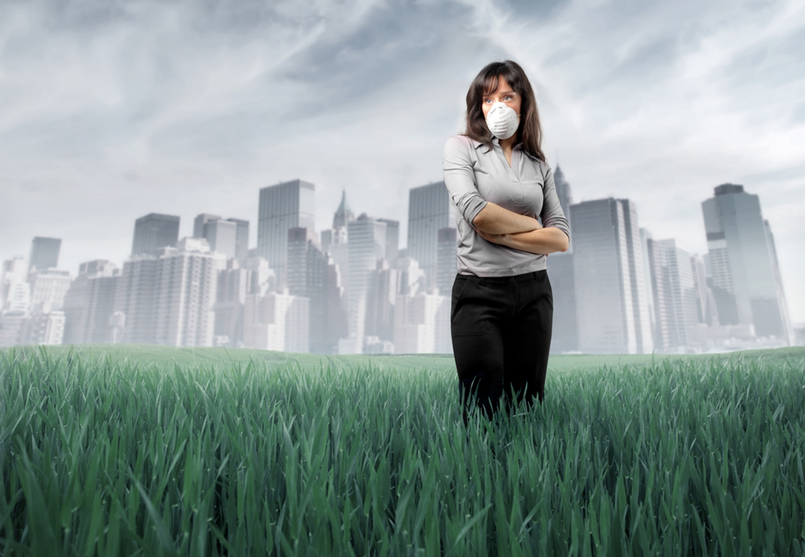
Ластанған ауадан адамдар кейбір өлімге апаратын ауырларға ұшырады.
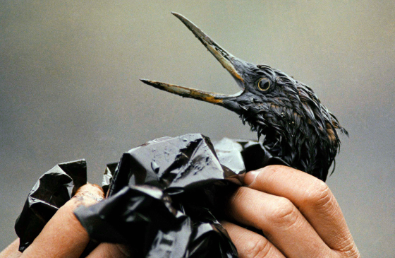
Жануарлар экологиямен тығыс байланысқан. Ауа, су ластанудан жануарлардың көптеген түрлері жер бетінен жойылып жатыр.
50
Қоқыс саны үшін
48
Ауа ластану бойынша әлем орында тұрмыз
78.5
Жалпы ластану деңгейін бағалау
Алматыны түтін басып жатыр. Бұл жай ғана проблема емес, бұл қазірдің өзінде апат.
Билік шұғыл түрде қаланың экологиялық жағдайын жақсарту шараларын қабылдауы қажет.

Алматы қаласының ауасының ластануының негізгі себептерінің бірі – автомобиль көлігі.
Қоғамдық көлікті дамытып, электромобильдерге көшу керек.
Алматы «жасыл» сценарий бойынша дамуы керек.
«Жасыл» дәліздерді, жаяу жүргіншілер мен велосипед аймақтарын құру қажет.
Климаттың өзгеруі – жалпы Жердің немесе оның жекелеген аймақтарының климатының уақыт бойынша ауытқуы, ондаған жылдардан миллиондаған жылдарға дейінгі уақыт аралығындағы ұзақ мерзімді мәндерден ауа райы параметрлерінің статистикалық маңызды ауытқуларымен көрінеді.
Мәселелерді
Шешу жолдары
Қоғамдық көлік
Қоғамдық көлікті пайдаланыңыз, велосипедпен жүріңіз немесе жаяу жүріңіз: Көлік қалдықтарын азайтыңыз.
Ағаштар
Ағаштар біздің табиғатты жақсарту үшін көп үлес қосады, олардың бірі ол ауа фильтрациясы. Сол ушін біз ағаштарды отырғызу керекпіз.
Көгалдандыру
Сонымен қатар микроклиматты қалпына келтіру, ауаны тазарту, психологиялық жайлылық деңгейін арттыру. Кәсіпорындардың айналасында және жол бойында ағаш отырғызу маңызды, бұл зиянды заттардың таралуын азайтады.
Қоқыс сұрыптау
Қоқыстан су аймақтарды, жерлерді тазалап оларды қайтадан өндеуге жіберу. Бұл қоқыстын санын азайтып, экологиясын жақсы тазалайды.
Мәселелерді шешу
Үкімет көмегі
Үкімет біздің табиғат үшін жаңа қоғамдар қүрып, заңдар шығарып біздің экологияға көмек көрсетіп жатыр .
Жасыл аймақтар
Жануарларды, өсімдіктерді сақтау және оларға гүлдену жағдайларын қамтамасыз ету үшін көбірек қорықтар салу.
Материалдық сыйақы түріндегі ынталандыру
Табиғатты тазартуға, қорықтарды қорғауға және волонтерлік іс-шараларға қатысуға көмектескені үшін марапаттау
Қызыл кітап
Әртүрлі жануарлардың сирек кездесетін, жойылып бара жатқан түрлерін өлтіру немесе жануарды маусымнан тыс өлтіру үшін айыппұлдар.
Табиғи жерлерді сақтау
«Атмосфералық ауаны қорғау туралы» Қазақстан Республикасының 2002 жылғы 11 наурыздағы Заңы, 2003 жылғы 20 маусымдағы Жер кодексі, 2003 жылғы 8 шілдедегі Орман кодексі, 2003 жылғы 9 шілдедегі Су кодексі, «Атмосфералық ауаны қорғау туралы» Заңдары.